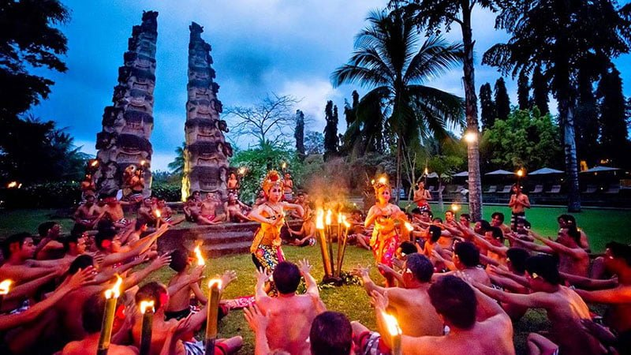

Tari Kecak
Tari Kecak atau biasa disebut sebagai tari “Cak” atau juga tari api adalah tarian tradisional khas Bali yang lebih berupa sendratari yang memadukan seni drama dan seni tari.
Menariknya, dalam kesenian ini tidak digunakan gamelan sebagai musik pengiring. Unsur suara hanya dihadirkan melalui para pemain yang menyuarakan vokal seperti “cak cak ke cak cak ke” sehingga tarian ini pun disebut dengan Tari Kecak.
Sebagai sebuah dramatari, Kecak secara keseluruhan menggambarkan seni peran dari “lakon pewayangan” seperti Rama Shinta dan tidak secara khusus digunakan sebagai bagian dari upacara sakral seperti pemujaan, odalan atau sejenisnya.
Ini adalah seni pertunjukan massal yang lebih berfungsi hiburan. Meskipun begitu, juga ada unsur sakral yang umumnya ditunjukan seperti kerauhan atau masolah yakni kekebalan dari bara api.
Pada awalnya, Kecak berasal dari kebudayaan pra-Hindu yang menjadi bagian dari ritual Sang Hyang. Adapun pada kisaran tahun 1930-an, Wayan Limbak bersama pelukis Jerman Walter Spies menciptakan tari Kecak berdasarkan tradisi SangHyang disertai bagian-bagian kisah Ramayana. Selanjutnya, Wayan Limbak mempopulerkan tarian ini saat berkeliling dunia bersama rombongan penari Bali-nya.
Tari Kecak adalah salah satu kesenian Bali yang hingga saat ini eksistensinya tetap lestari dan dijaga keasliannya. Terus hidup dan menjadi salah satu simbol khas Bali, terutama dalam hal pariwisata menjadi magnet yang mampu menarik sebagian besar wisatawan domestik dan mancanegara.
Tari ini sangat digemari oleh mereka karena memiliki keunikan tersendiri termasuk dalam hal struktur gerak, tata busana serta suara atau vokal yang dihadirkan.
<< Kembali